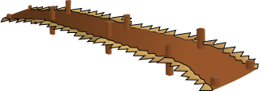

Measuring PuzzlesStarter PuzzlesPuzzle GamesLogic PuzzlesJigsaw PuzzlesNumber PuzzlesCard PuzzlesEinstein PuzzlesSam Loyd PuzzlesAlgebra Puzzles
The Collapsing Bridge Puzzle - Solution
The Puzzle:

Four friends want to cross a bridge.
• Only two people can cross at a time.
• It is a dark and stormy night and there is only one torch between them.
• The water is rising fast so every minute counts!
Sam takes 1 minute to cross.
Alex takes 2 minutes.
Hunter takes 4 minutes
and Jade takes 8 minutes
What is the FASTEST they can all get across?
Our Solution:
The "obvious" solution is to use Sam (the fastest) to accompany everyone like this:
• Sam and Jade cross first using up 8 minutes
• Sam comes back making it 9 minutes
• Sam and Hunter cross making it 13 minutes
• Sam comes back making it 14 minutes
• Sam and Alex cross making it 16 minutes
But we can do better!
• Sam and Alex cross first using up 2 minutes
• Sam comes back making it 3 minutes
• Hunter and Jade cross making it 11 minutes
• then Alex crosses back over making it 13 minutes
• And finally Sam and Alex cross together to make it 15 minutes!
We saved time by thinking a little differently.
"Ashwyn" kindly provided us with an alternative (but similar) solution:
• Sam and Alex cross first using up 2 minutes
• Alex comes back making it 4 minutes
• Hunter and Jade cross making it 12 minutes
• then Sam crosses back over making it 13 minutes
• And finally Sam and Alex cross together to make it 15 minutes
• Sam and Jade cross first using up 8 minutes
• Sam comes back making it 9 minutes
• Sam and Hunter cross making it 13 minutes
• Sam comes back making it 14 minutes
• Sam and Alex cross making it 16 minutes
But we can do better!
• Sam and Alex cross first using up 2 minutes
• Sam comes back making it 3 minutes
• Hunter and Jade cross making it 11 minutes
• then Alex crosses back over making it 13 minutes
• And finally Sam and Alex cross together to make it 15 minutes!
We saved time by thinking a little differently.
"Ashwyn" kindly provided us with an alternative (but similar) solution:
• Sam and Alex cross first using up 2 minutes
• Alex comes back making it 4 minutes
• Hunter and Jade cross making it 12 minutes
• then Sam crosses back over making it 13 minutes
• And finally Sam and Alex cross together to make it 15 minutes
Puzzle Author: Rod Pierce